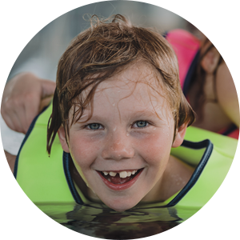

At Dry Oar Rafting, our mission is to provide thrilling yet safe river rafting adventures that connect outdoor enthusiasts with the natural world. We aim to transcend geographical boundaries, offering transparent pricing, detailed safety guidelines, and unforgettable experiences. Through our website, we paint a vivid picture of the excitement, showcase high-quality content, and share the stories of satisfied adventurers. We're not just about rafting; we're about making outdoor dreams a reality.